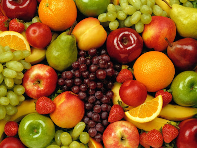
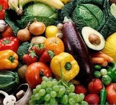

<!--
  Generated template for the FruhoPage page.

  See http://ionicframework.com/docs/components/#navigation for more info on
  Ionic pages and navigation.
-->
<ion-header>

  <ion-navbar>
    <ion-title>Frutos y Hortalizas</ion-title>
  </ion-navbar>

</ion-header>


<ion-content padding class="fondofro">

  <div text-center>
    <h1> FRUTAS</h1>
    
    <!--<button ion-button outline (click)="irPeces()">Peces</button>-->
    <!--<button ion-button outline [navPush]="pokedex">Pokedex</button>-->
  </div>
  <div text-center>
    <h1>HORTALIZAS</h1>
    
    <!--<button ion-button outline (click)="irAves()">Aves</button>-->
    <!--<button ion-button outline [navPush]="pokedex">Pokedex</button>-->
  </div>


</ion-content>
